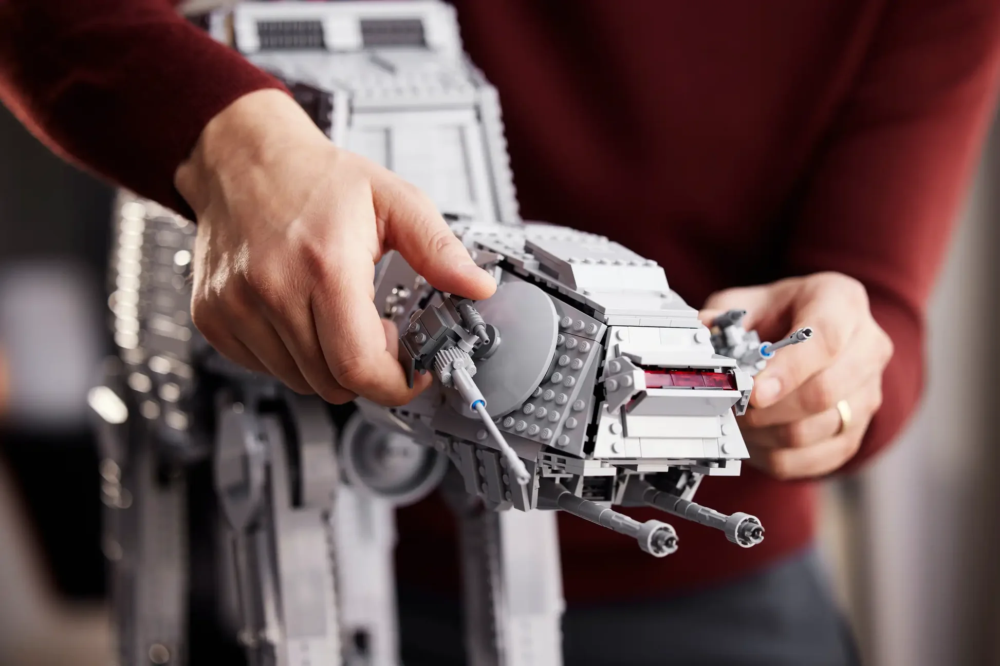

Jesus began going to the gym after a back injury, and it has
since become a regular part of his life. Strength training and
fitness are important to him for both health and personal growth.
Reading
Reading was not always a hobby for Jesus, but he picked it up
to improve his vocabulary and expand his knowledge. It is now
something he enjoys doing in his free time.
Building LEGO Sets

Building LEGO sets has been a lifelong interest, starting with
birthday gifts from his aunt. Star Wars sets are his favorite
and allow him to be creative while connecting back to childhood.